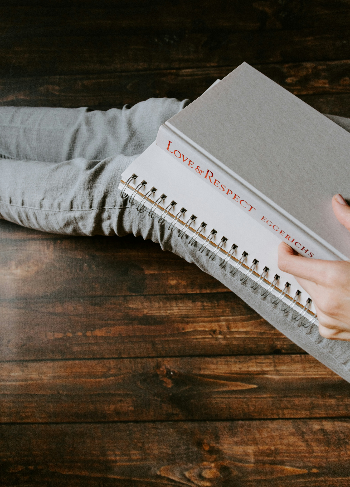
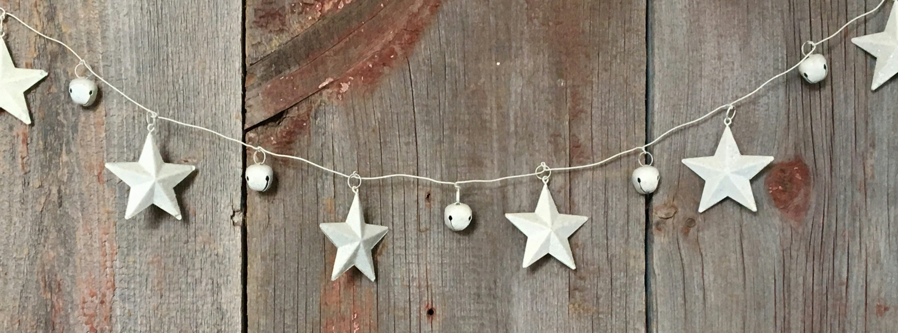

What is a life coach?
 Sometimes, just talking through a problem to listening ears is the solution. Life coaches do that and much more. Life coaches don't solve your problems for you, but offer advice so you can achieve goals, build confidence, and create positive change. Life can be overwhelming, and it can push your dreams to the back burner. A life coach helps you develop an organized plan to foster success in areas such as personal relationships, career change or advancement, and long term dreams.
Sometimes, just talking through a problem to listening ears is the solution. Life coaches do that and much more. Life coaches don't solve your problems for you, but offer advice so you can achieve goals, build confidence, and create positive change. Life can be overwhelming, and it can push your dreams to the back burner. A life coach helps you develop an organized plan to foster success in areas such as personal relationships, career change or advancement, and long term dreams.
What to expect
 Sessions are typically one hour long, and you can anticipate a productive conversation with a coach who uses active listening, insightful questioning, and goal setting exercises.
Sessions are typically one hour long, and you can anticipate a productive conversation with a coach who uses active listening, insightful questioning, and goal setting exercises.
How to tell if you would benefit
 If you know you struggle with making decisions, a life coach can help you develop trust in yourself that you are capable of making the right choice. If you had a major life change, a coach can help restore order. If you always find yourself in a bad or unfulfilling relationship it might be time to explore more about yourself and your attachment style. If you want to change careers, a coach can guide you.
If you know you struggle with making decisions, a life coach can help you develop trust in yourself that you are capable of making the right choice. If you had a major life change, a coach can help restore order. If you always find yourself in a bad or unfulfilling relationship it might be time to explore more about yourself and your attachment style. If you want to change careers, a coach can guide you.
My area of expertise
 I have a deep interest in interpersonal relationships: friendships, dating, situationships, etc. I've seen the good, the bad, and the ugly. Through the process, I�ve witnessed myself become truer, more confident, and stronger. Through books and sheer experience, I have much to offer. I want to share what I have taken years of classes, reading, and heartbreak to learn. If you would accept my advice, allow me to hear your story.
Testimonials
"I can't recommend this life coaching service enough! From the moment I began working with Nece, I felt understood, supported, and motivated to make real changes in my life. The sessions are always tailored to my specific goals, and she provides insightful guidance and practical tools that I can easily apply in my everyday life." -Medical Student 2024
"I've gained so much clarity about my personal and professional path, and I've started making decisions with confidence. The transformation has been incredible! The service is truly dedicated to helping you become the best version of yourself." -Single Mom of Two, 2024
"If you're looking for someone who is compassionate, knowledgeable, and genuinely committed to your success, Floresco is the coaching service you need!" -New Business Owner, 2025
